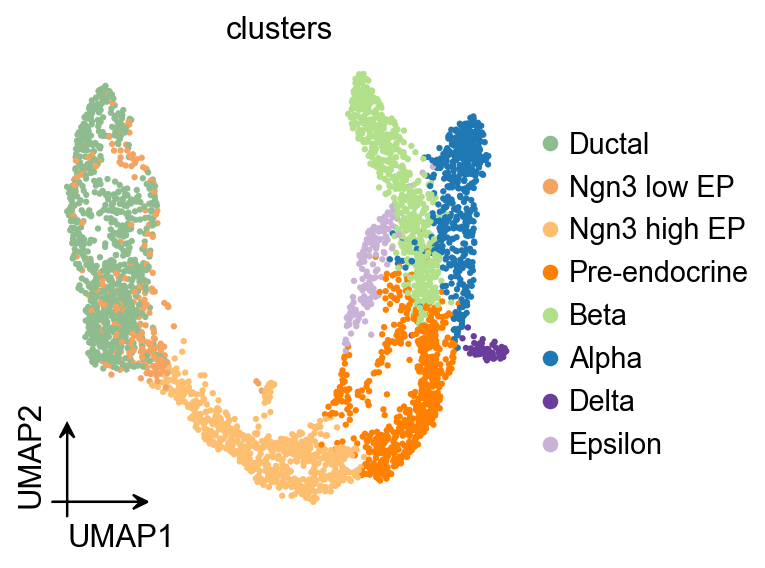
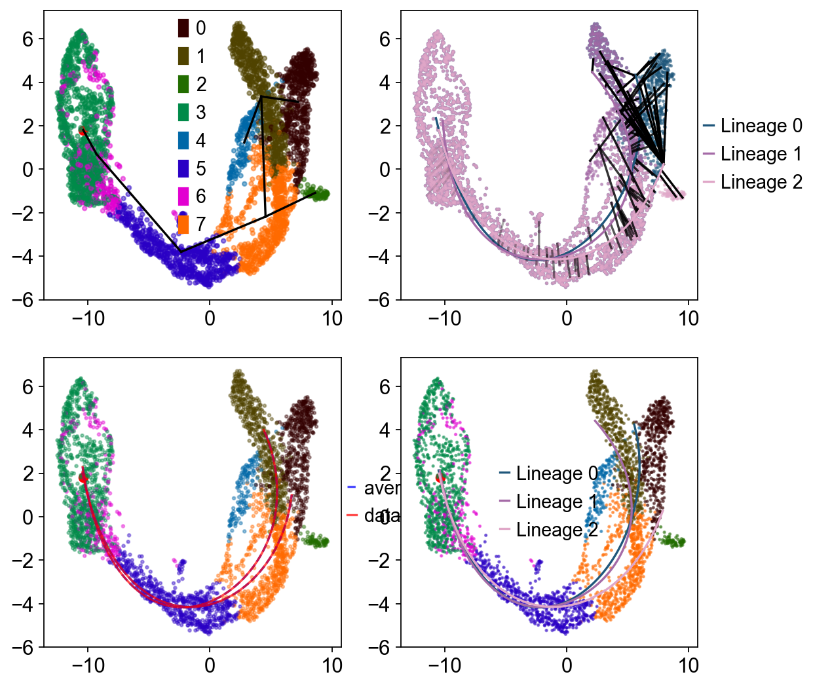
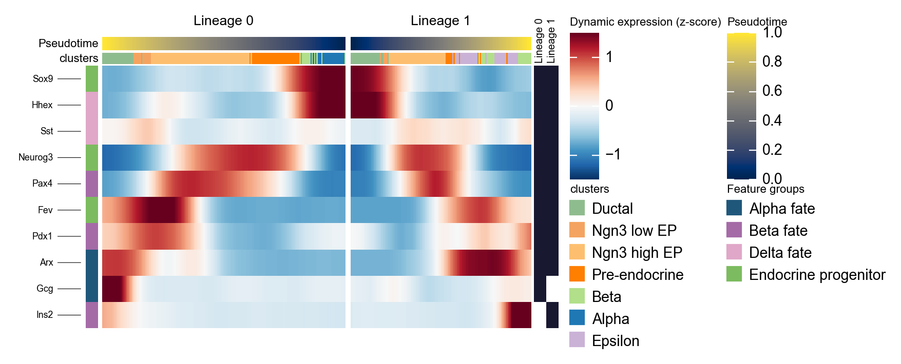
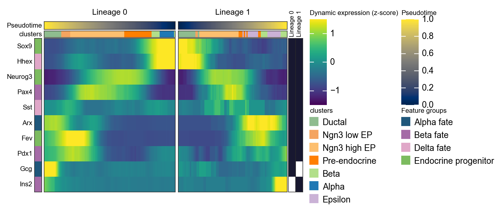
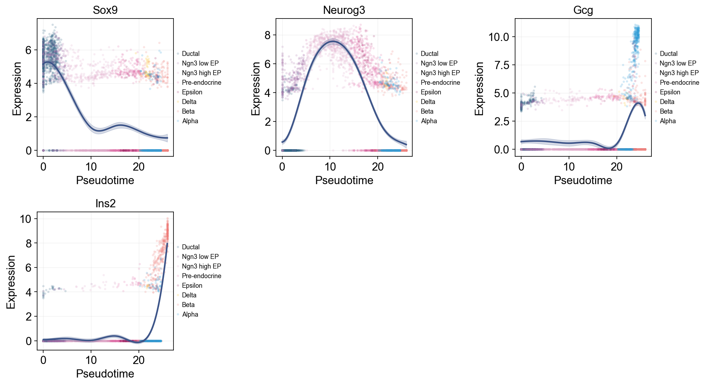
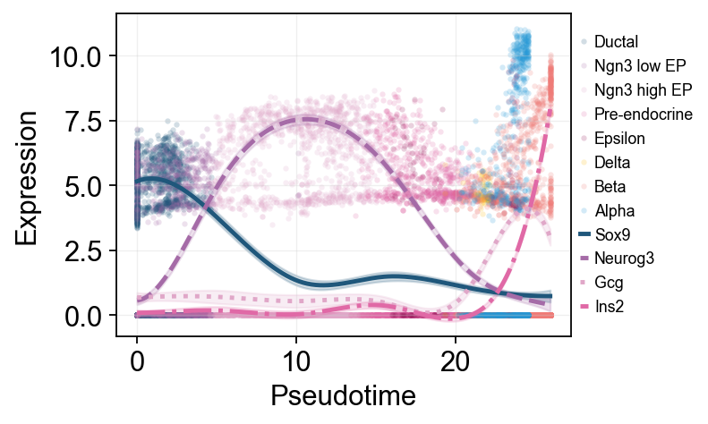
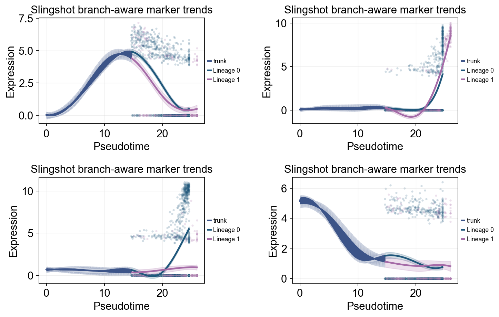
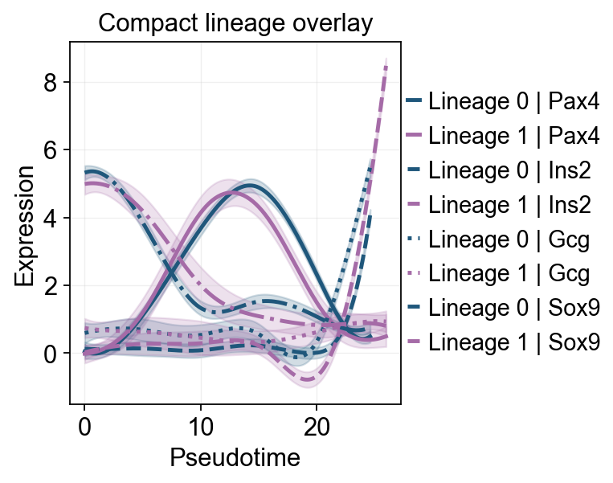
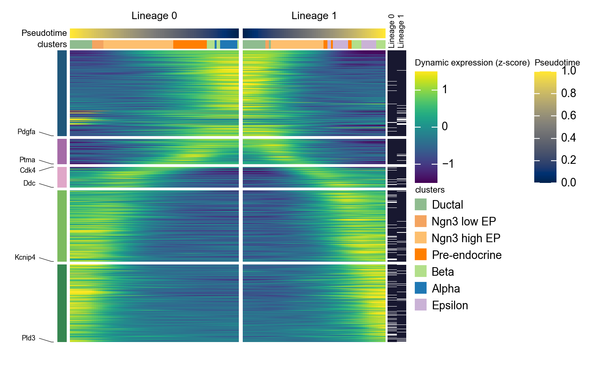

Trajectory Inference with Slingshot#
This is the recommended day-one workflow for ov.single.TrajInfer.
We use Slingshot because it scored best on our no-leakage dynbenchmark
re-run (overall 0.49, matching R Slingshot byte-for-byte on cell-position
correlation) and it handles branching topologies out of the box.
If you want a different backend, swap one line:
Traj.inference(method='palantir') / 'diffusion_map' / 'sctour' /
'stavia' / 'scorpius' / 'tscan' / 'destiny' / 'urd' /
'monocle3' / 'cytotrace'. The zoo has one tutorial per method.
import scanpy as sc
import matplotlib.pyplot as plt
import warnings
warnings.filterwarnings("ignore", category=FutureWarning)
import omicverse as ov
ov.plot_set(font_path='Arial')
%load_ext autoreload
%autoreload 2
🔬 Starting plot initialization...
Using already downloaded Arial font from: /var/folders/rv/3jnfbs0d6r7d0c5bfj7ft5k00000gn/T/omicverse_arial.ttf
Registered as: Arial
🧬 Detecting GPU devices…
✅ Apple Silicon MPS detected
• [MPS] Apple Silicon GPU - Metal Performance Shaders available
____ _ _ __
/ __ \____ ___ (_)___| | / /__ _____________
/ / / / __ `__ \/ / ___/ | / / _ \/ ___/ ___/ _ \
/ /_/ / / / / / / / /__ | |/ / __/ / (__ ) __/
\____/_/ /_/ /_/_/\___/ |___/\___/_/ /____/\___/
🔖 Version: 2.2.1rc1 📚 Tutorials: https://omicverse.readthedocs.io/
✅ plot_set complete.
adata = ov.datasets.pancreatic_endocrinogenesis()
⚠️ File ./data/endocrinogenesis_day15.h5ad already exists
Loading data from ./data/endocrinogenesis_day15.h5ad
✅ Successfully loaded: 3696 cells × 27998 genes
adata = ov.pp.preprocess(adata, mode='shiftlog|pearson', n_HVGs=3000)
adata.raw = adata
adata = adata[:, adata.var.highly_variable_features]
ov.pp.scale(adata)
ov.pp.pca(adata, layer='scaled', n_pcs=50)
🔍 [2026-05-22 18:42:49] Running preprocessing in 'cpu' mode...
Begin robust gene identification
After filtration, 17750/27998 genes are kept.
Among 17750 genes, 16426 genes are robust.
✅ Robust gene identification completed successfully.
Begin size normalization: shiftlog and HVGs selection pearson
🔍 Count Normalization:
Target sum: 500000.0
Exclude highly expressed: True
Max fraction threshold: 0.2
⚠️ Excluding 1 highly-expressed genes from normalization computation
Excluded genes: ['Ghrl']
✅ Count Normalization Completed Successfully!
✓ Processed: 3,696 cells × 16,426 genes
✓ Runtime: 0.11s
🔍 Highly Variable Genes Selection (Experimental):
Method: pearson_residuals
Target genes: 3,000
Theta (overdispersion): 100
✅ Experimental HVG Selection Completed Successfully!
✓ Selected: 3,000 highly variable genes out of 16,426 total (18.3%)
✓ Results added to AnnData object:
• 'highly_variable': Boolean vector (adata.var)
• 'highly_variable_rank': Float vector (adata.var)
• 'highly_variable_nbatches': Int vector (adata.var)
• 'highly_variable_intersection': Boolean vector (adata.var)
• 'means': Float vector (adata.var)
• 'variances': Float vector (adata.var)
• 'residual_variances': Float vector (adata.var)
Time to analyze data in cpu: 0.94 seconds.
✅ Preprocessing completed successfully.
Added:
'highly_variable_features', boolean vector (adata.var)
'means', float vector (adata.var)
'variances', float vector (adata.var)
'residual_variances', float vector (adata.var)
'counts', raw counts layer (adata.layers)
End of size normalization: shiftlog and HVGs selection pearson
╭─ SUMMARY: preprocess ──────────────────────────────────────────────╮
│ Duration: 1.0725s │
│ Shape: 3,696 x 27,998 -> 3,696 x 16,426 │
│ │
│ CHANGES DETECTED │
│ ──────────────── │
│ ● VAR │ ✚ highly_variable (bool) │
│ │ ✚ highly_variable_features (bool) │
│ │ ✚ highly_variable_rank (float) │
│ │ ✚ means (float) │
│ │ ✚ n_cells (int) │
│ │ ✚ percent_cells (float) │
│ │ ✚ residual_variances (float) │
│ │ ✚ robust (bool) │
│ │ ✚ variances (float) │
│ │
│ ● UNS │ ✚ REFERENCE_MANU │
│ │ ✚ _ov_provenance │
│ │ ✚ history_log │
│ │ ✚ hvg │
│ │ ✚ log1p │
│ │ ✚ status │
│ │ ✚ status_args │
│ │
│ ● LAYERS │ ✚ counts (sparse matrix, 3696x16426) │
│ │
╰────────────────────────────────────────────────────────────────────╯
╭─ SUMMARY: scale ───────────────────────────────────────────────────╮
│ Duration: 0.41s │
│ Shape: 3,696 x 3,000 (Unchanged) │
│ │
│ CHANGES DETECTED │
│ ──────────────── │
│ ● LAYERS │ ✚ scaled (array, 3696x3000) │
│ │
╰────────────────────────────────────────────────────────────────────╯
computing PCA🔍
with n_comps=50
🖥️ Using sklearn PCA for CPU computation
🖥️ sklearn PCA backend: CPU computation
📊 PCA input data type: ArrayView, shape: (3696, 3000), dtype: float64
🔧 PCA solver used: covariance_eigh
finished✅ (9.92s)
╭─ SUMMARY: pca ─────────────────────────────────────────────────────╮
│ Duration: 9.9253s │
│ Shape: 3,696 x 3,000 (Unchanged) │
│ │
│ CHANGES DETECTED │
│ ──────────────── │
│ ● UNS │ ✚ scaled|original|cum_sum_eigenvalues │
│ │ ✚ scaled|original|pca_var_ratios │
│ │
│ ● OBSM │ ✚ scaled|original|X_pca (array, 3696x50) │
│ │
╰────────────────────────────────────────────────────────────────────╯
We first inspect the variance explained by principal components to choose a practical PC range for neighbor graph construction.
ov.utils.plot_pca_variance_ratio(adata, n_pcs=15)
{kind=link}
ov.pl.umap(
adata,
color='clusters'
)
X_umap converted to UMAP to visualize and saved to adata.obsm['UMAP']
if you want to use X_umap, please set convert=False
{kind=link}

Slingshot#
Slingshot infers continuous and branching lineage structures in a low-dimensional space. It was originally designed for developmental trajectory modeling in single-cell RNA-seq data, usually after dimensionality reduction and clustering. It can handle any number of branch events and can incorporate prior knowledge through semi-supervised graph construction.
Traj=ov.single.TrajInfer(
adata,basis='X_umap',
groupby='clusters',
use_rep='scaled|original|X_pca',
n_comps=50
)
Traj.set_origin_cells('Ductal')
#Traj.set_terminal_cells(["Granule mature","OL","Astrocytes"])
If only the inferred pseudotime ordering is needed, the debug_axes argument can be omitted.
Traj.inference(method='slingshot',num_epochs=1)
Lineages: [Lineage[3, 6, 5, 7, 1, 0], Lineage[3, 6, 5, 7, 1, 4], Lineage[3, 6, 5, 7, 2]]
Reversing from leaf to root
Averaging branch @1 with lineages: [0, 1] [<pcurvepy2.pcurve.PrincipalCurve object at 0x15095efd0>, <pcurvepy2.pcurve.PrincipalCurve object at 0x1517f46d0>]
Averaging branch @7 with lineages: [0, 1, 2] [<pcurvepy2.pcurve.PrincipalCurve object at 0x150c8dd90>, <pcurvepy2.pcurve.PrincipalCurve object at 0x1510c62d0>]
Shrinking branch @7 with curves: [<pcurvepy2.pcurve.PrincipalCurve object at 0x150c8dd90>, <pcurvepy2.pcurve.PrincipalCurve object at 0x1510c62d0>]
Shrinking branch @1 with curves: [<pcurvepy2.pcurve.PrincipalCurve object at 0x15095efd0>, <pcurvepy2.pcurve.PrincipalCurve object at 0x1517f46d0>]
Set debug_axes when you want to visualize the lineage fitting process.
fig, axes = plt.subplots(nrows=2, ncols=2, figsize=(8, 8))
Traj.inference(method='slingshot',num_epochs=1,debug_axes=axes)
Lineages: [Lineage[3, 6, 5, 7, 1, 0], Lineage[3, 6, 5, 7, 1, 4], Lineage[3, 6, 5, 7, 2]]
Reversing from leaf to root
Averaging branch @1 with lineages: [0, 1] [<pcurvepy2.pcurve.PrincipalCurve object at 0x151880510>, <pcurvepy2.pcurve.PrincipalCurve object at 0x151133ed0>]
Averaging branch @7 with lineages: [0, 1, 2] [<pcurvepy2.pcurve.PrincipalCurve object at 0x151731e50>, <pcurvepy2.pcurve.PrincipalCurve object at 0x1518bc8d0>]
Shrinking branch @7 with curves: [<pcurvepy2.pcurve.PrincipalCurve object at 0x151731e50>, <pcurvepy2.pcurve.PrincipalCurve object at 0x1518bc8d0>]
Shrinking branch @1 with curves: [<pcurvepy2.pcurve.PrincipalCurve object at 0x151880510>, <pcurvepy2.pcurve.PrincipalCurve object at 0x151133ed0>]
{kind=link}

ov.pl.embedding(
adata,basis='X_umap',
color=['clusters','slingshot_pseudotime'],
frameon='small',
cmap='Reds'
)
{kind=link}
OV Slingshot curve overlay#
Slingshot stores fitted lineage curves in the model object, so they can be overlaid on the unified OmicVerse embedding style.
fig, ax = plt.subplots(figsize=(4, 4))
ov.pl.embedding(
adata,
basis='X_umap',
color='clusters',
ax=ax,
show=False,
size=50,
)
ov.pl.trajectory_overlay(
adata,
ax=ax,
method='slingshot',
model=Traj.slingshot,
)
plt.show()
{kind=link}
sc.pp.neighbors(adata,use_rep='scaled|original|X_pca')
ov.utils.cal_paga(
adata,
use_time_prior='slingshot_pseudotime',
vkey='paga',
groups='clusters'
)
running PAGA using priors: ['slingshot_pseudotime']
finished
added
'paga/connectivities', connectivities adjacency (adata.uns)
'paga/connectivities_tree', connectivities subtree (adata.uns)
'paga/transitions_confidence', velocity transitions (adata.uns)
ov.utils.plot_paga(
adata,basis='umap',
size=50,
alpha=.1,
title='PAGA Slingshot-graph',
min_edge_width=2,
node_size_scale=1.5,
show=False,
legend_loc=False
)
<Axes: title={'center': 'PAGA Slingshot-graph'}>

Summarize two Slingshot lineages with a mirrored dynamic heatmap#
Slingshot can return multiple lineage curves. The following code converts fitted curves into cell-level lineage labels and lineage-specific pseudotime, then plots two lineages side by side. The first lineage is reversed so that the left panel points toward the branch point, which makes branch-specific programs easier to compare.
import pandas as pd
import numpy as np
slingshot_genes = ['Sox9', 'Neurog3', 'Fev', 'Gcg', 'Arx', 'Pax4', 'Ins2', 'Pdx1', 'Sst', 'Hhex']
n_lineages = len(Traj.slingshot.lineages)
slingshot_lineage_labels = [f'Lineage {i}' for i in range(n_lineages)]
dominant_lineage = np.asarray(Traj.slingshot.cell_weights).argmax(axis=1)
lineage_specific_pt = np.full(adata.n_obs, np.nan)
for i, curve in enumerate(Traj.slingshot.curves):
curve_pt = np.asarray(curve.pseudotimes_interp, dtype=float)
adata.obs[f'slingshot_lineage_{i + 1}_pt'] = curve_pt
lineage_specific_pt[dominant_lineage == i] = curve_pt[dominant_lineage == i]
adata.obs['slingshot_lineage'] = pd.Categorical(
[slingshot_lineage_labels[i] for i in dominant_lineage],
categories=slingshot_lineage_labels,
ordered=True,
)
adata.obs['slingshot_lineage_pseudotime'] = lineage_specific_pt
selected_slingshot_lineages = slingshot_lineage_labels[:2]
slingshot_marker = {
'Alpha fate': ['Gcg', 'Arx'],
'Beta fate': ['Pax4', 'Ins2', 'Pdx1'],
'Delta fate': ['Sst', 'Hhex'],
'Endocrine progenitor': ['Sox9', 'Neurog3', 'Fev'],
}
d1 = ov.pl.dynamic_heatmap(
adata,
var_names=slingshot_marker,
pseudotime='slingshot_lineage_pseudotime',
lineage_key='slingshot_lineage',
lineages=selected_slingshot_lineages,
reverse_ht=[selected_slingshot_lineages[0]],
use_raw=adata.raw is not None,
use_cell_columns=False,
cell_annotation='clusters',
cell_bins=200,
smooth_window=17,
fitted_window=31,
figsize=(5, 4),
standard_scale='var',
cmap='RdBu_r',
use_fitted=True,
border=False,
show=False,
)
🔍 Dynamic heatmap:
Candidate features: 10
Pseudotime: slingshot_lineage_pseudotime
Lineage key: slingshot_lineage
Cell annotation: clusters
use_fitted=True | cell_bins=200 | cmap=RdBu_r
Lineages: Lineage 0, Lineage 1
✅ Dynamic heatmap completed!
✓ Matrix shape: 10 features × 337 columns
{kind=link}

d1 = ov.pl.dynamic_heatmap(
adata,
var_names=slingshot_marker,
pseudotime='slingshot_lineage_pseudotime',
lineage_key='slingshot_lineage',
lineages=selected_slingshot_lineages,
reverse_ht=[selected_slingshot_lineages[0]],
use_raw=adata.raw is not None,
use_cell_columns=False,
cell_annotation='clusters',
figsize=(5, 4),
standard_scale='var',
show_row_names=True,
use_fitted=False,
border=True,
show=False,
)
🔍 Dynamic heatmap:
Candidate features: 10
Pseudotime: slingshot_lineage_pseudotime
Lineage key: slingshot_lineage
Cell annotation: clusters
use_fitted=False | cell_bins=100 | cmap=viridis
Lineages: Lineage 0, Lineage 1
✅ Dynamic heatmap completed!
✓ Matrix shape: 10 features × 183 columns
{kind=link}

Branch-aware pseudotime stream plot#
ov.pl.branch_streamplot only needs pseudotime and cell-state labels, so it can also be used for this trajectory method. Ribbon width shows where each cell type is enriched along pseudotime, and the branch center lines help show where endocrine fates separate.
fig, ax = ov.pl.branch_streamplot(
adata,
group_key='clusters',
pseudotime_key='slingshot_pseudotime',
show=False,
)
plt.show()
{kind=link}
Embedding stream plot#
Use dynamic_features / dynamic_trends on Slingshot lineages#
Here we show two complementary views. First, a global trend plot fits marker curves along slingshot_pseudotime with raw points colored by cluster. Second, branch trends are refitted by Slingshot lineage to compare endocrine split-associated differences.
slingshot_trend_genes = ['Sox9', 'Neurog3', 'Fev', 'Gcg', 'Arx', 'Pax4', 'Ins2', 'Pdx1', 'Sst', 'Hhex']
slingshot_global_dyn = ov.single.dynamic_features(
adata,
genes=slingshot_trend_genes,
pseudotime='slingshot_pseudotime',
use_raw=adata.raw is not None,
distribution='normal',
link='identity',
n_splines=8,
store_raw=True,
raw_obs_keys=['clusters'],
)
🔍 Dynamic feature analysis:
Views: 1 | Features: 10
Pseudotime: slingshot_pseudotime
Stored raw obs keys: ['clusters']
Expression source: adata.raw
GAM: normal-identity | splines=8
✅ Dynamic feature analysis completed!
✓ Successful fits: 10/10
✓ Fitted rows: 2000
✓ Raw observations stored: 36960
Single-line Global Trends#
Each gene is fitted with one global trend line while raw points are colored by cell annotation. This view separates the overall pseudotime expression pattern from the cell states contributing the observations.
ov.pl.dynamic_trends(
slingshot_global_dyn,
genes=['Sox9', 'Neurog3', 'Gcg', 'Ins2'],
add_point=True,
point_color_by='clusters',
figsize=(5, 3.5),
legend_loc='right margin',
legend_fontsize=8,
)
plt.show()
🔍 Dynamic trend plotting:
Features: 4 | Groups: 1
compare_features=False | compare_groups=False
✅ Dynamic trend plotting completed!
{kind=link}

Multi-marker Trend Comparison#
Multiple marker curves are overlaid on one pseudotime axis to compare activation and decay order across programs.
ov.pl.dynamic_trends(
slingshot_global_dyn,
genes=['Sox9', 'Neurog3', 'Gcg', 'Ins2'],
compare_features=True,
add_point=True,
point_color_by='clusters',
line_style_by='features',
figsize=(6.2, 3.2),
linewidth=2.2,
legend_loc='right margin',
legend_fontsize=8,
)
plt.show()
🔍 Dynamic trend plotting:
Features: 4 | Groups: 1
compare_features=True | compare_groups=False
✅ Dynamic trend plotting completed!
{kind=link}

slingshot_dyn_res = ov.single.dynamic_features(
adata,
genes=slingshot_trend_genes,
pseudotime='slingshot_lineage_pseudotime',
groupby='slingshot_lineage',
groups=selected_slingshot_lineages,
use_raw=adata.raw is not None,
distribution='normal',
link='identity',
n_splines=8,
store_raw=True,
)
slingshot_dyn_res.get_stats(successful_only=True).sort_values(['gene']).head(8)
🔍 Dynamic feature analysis:
Views: 2 | Features: 10
Pseudotime: slingshot_lineage_pseudotime
Grouping: slingshot_lineage
Expression source: adata.raw
GAM: normal-identity | splines=8
✅ Dynamic feature analysis completed!
✓ Successful fits: 20/20
✓ Fitted rows: 4000
✓ Raw observations stored: 30550
dataset groupby_key group gene success error n_cells \
14 Lineage 1 slingshot_lineage Lineage 1 Arx True None 533
4 Lineage 0 slingshot_lineage Lineage 0 Arx True None 2522
2 Lineage 0 slingshot_lineage Lineage 0 Fev True None 2522
12 Lineage 1 slingshot_lineage Lineage 1 Fev True None 533
3 Lineage 0 slingshot_lineage Lineage 0 Gcg True None 2522
13 Lineage 1 slingshot_lineage Lineage 1 Gcg True None 533
9 Lineage 0 slingshot_lineage Lineage 0 Hhex True None 2522
19 Lineage 1 slingshot_lineage Lineage 1 Hhex True None 533
exp_ncells peak_time valley_time min_pseudotime max_pseudotime \
14 110 20.163205 8.026130 0.0 25.970730
4 600 22.561005 7.726371 0.0 24.600767
2 1010 19.594078 9.086213 0.0 24.600767
12 182 20.032699 7.634611 0.0 25.970730
3 643 24.538956 18.234237 0.0 24.600767
13 83 25.252946 14.420933 0.0 25.970730
9 765 1.421652 24.291712 0.0 24.600767
19 188 2.283858 25.905477 0.0 25.970730
r2 explained_deviance p_value padj
14 0.395091 0.395091 7.481768e-01 7.481768e-01
4 0.265808 0.265808 1.936936e-01 1.936936e-01
2 0.589726 0.589726 1.110223e-16 1.387779e-16
12 0.406811 0.406811 1.110223e-16 1.586033e-16
3 0.318281 0.318281 1.110223e-16 1.387779e-16
13 0.016039 0.016039 1.160965e-07 1.451207e-07
9 0.488404 0.488404 1.110223e-16 1.387779e-16
19 0.563442 0.563442 1.110223e-16 1.586033e-16
slingshot_split_mask = adata.obs['clusters'].astype(str).isin(['Ngn3 high EP', 'Pre-endocrine'])
slingshot_split_time = float(np.nanmedian(adata.obs.loc[slingshot_split_mask, 'slingshot_lineage_pseudotime'])) if slingshot_split_mask.any() else float(np.nanmedian(adata.obs['slingshot_lineage_pseudotime']))
ov.pl.dynamic_trends(
slingshot_dyn_res,
genes=['Pax4', 'Ins2', 'Gcg', 'Sox9'],
compare_groups=True,
split_time=slingshot_split_time,
shared_trunk=True,
add_point=True,
point_color_by='group',
figsize=(5.5, 3),
linewidth=2.2,
ncols=2,
legend_loc='right margin',
legend_fontsize=8,
title='Slingshot branch-aware marker trends',
)
plt.show()
🔍 Dynamic trend plotting:
Features: 4 | Groups: 2
compare_features=False | compare_groups=True
✅ Dynamic trend plotting completed!
{kind=link}

ov.pl.dynamic_trends(
slingshot_dyn_res,
genes=['Pax4', 'Ins2', 'Gcg', 'Sox9'],
compare_features=True,
compare_groups=True,
line_style_by='features',
figsize=(6, 4),
linewidth=2.2,
title='Compact lineage overlay',
)
plt.show()
🔍 Dynamic trend plotting:
Features: 4 | Groups: 2
compare_features=True | compare_groups=True
✅ Dynamic trend plotting completed!
{kind=link}

g = ov.pl.dynamic_heatmap(
adata,
top_features=1000, # Keep the top 1000 most dynamic genes for plotting
pseudotime='slingshot_lineage_pseudotime',
lineage_key='slingshot_lineage',
lineages=selected_slingshot_lineages,
reverse_ht=[selected_slingshot_lineages[0]],
use_raw=adata.raw is not None,
use_cell_columns=False,
cell_annotation='clusters',
cell_bins=90,
smooth_window=17,
fitted_window=31,
n_split=5,
figsize=(5, 6),
standard_scale='var',
cmap='viridis',
top_label_features=10,
border=False,
show=False,
)
🔍 Dynamic heatmap:
Candidate features: 3000
Pseudotime: slingshot_lineage_pseudotime
Lineage key: slingshot_lineage
Cell annotation: clusters
use_fitted=True | cell_bins=90 | cmap=viridis
Lineages: Lineage 0, Lineage 1
✅ Dynamic heatmap completed!
✓ Matrix shape: 1000 features × 166 columns
{kind=link}
